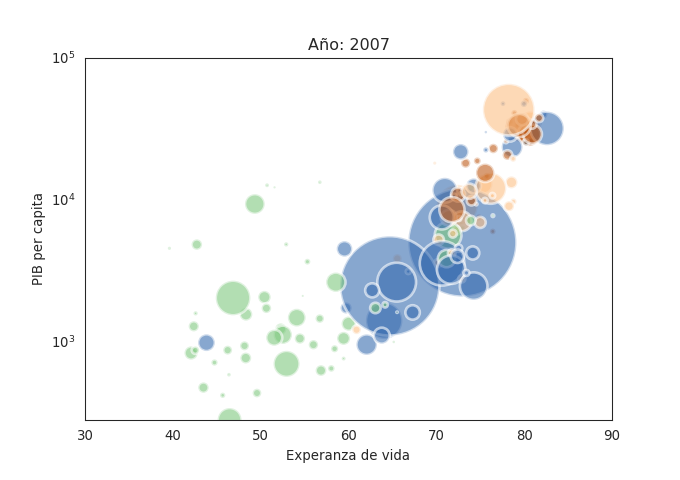
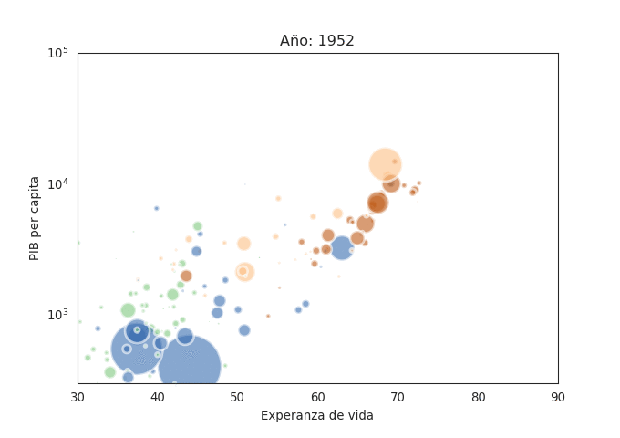

Generar gráficos animados de burbuja a lo Gapminer con Python
Posted on sáb 06 octubre 2018 in Tutorial Python • 3 min read
En febrero de 2013 creé un artículo sobre Cómo hacer gráficos de burbujas con matplotlib, la idea era ver como se generaba una gráfica al estilo de la presentación de Hans Rosling (por cierto, murió en Febrero de 2017).
A continuación el vídeo que explica la historia de 200 países en 200 años, la esperanza de vida y calidad de vida.
O su charla TED sobre sobre las mejores estadísticas que nunca haz visto:
En el artículo que menciono se usó el conjunto de datos de la rata de criminalidad por estado de Estados Unidos del año 2005. Pero sólo mostraba la información y no la variación en el tiempo.
Este artículo se basa en el siguiente tutorial Python Gapminer Animation.
A continuación se muestra el código del script vía notebook de jupyter:
https://python-graph-gallery.com/341-python-gapminder-animation/
In [1]:
#Se importa las librerias matplitlib, numpy, pandas, seaborn
import matplotlib.pyplot as plt
import numpy as np
import seaborn as sns
sns.set_style("white")
import pandas as pd
my_dpi=96
In [2]:
# Se obtiene los datos en formato csv y se convierte en un dataframe
url = 'https://python-graph-gallery.com/wp-content/uploads/gapminderData.csv'
data = pd.read_csv(url)
In [3]:
#Se muestra el data frame
data.head()
Out[3]:
| country | year | pop | continent | lifeExp | gdpPercap | |
|---|---|---|---|---|---|---|
| 0 | Afghanistan | 1952 | 8425333.0 | Asia | 28.801 | 779.445314 |
| 1 | Afghanistan | 1957 | 9240934.0 | Asia | 30.332 | 820.853030 |
| 2 | Afghanistan | 1962 | 10267083.0 | Asia | 31.997 | 853.100710 |
| 3 | Afghanistan | 1967 | 11537966.0 | Asia | 34.020 | 836.197138 |
| 4 | Afghanistan | 1972 | 13079460.0 | Asia | 36.088 | 739.981106 |
Tiene las columnas países, año, población, contienen, esperanza de vida y pib percapita In [4]:
#Se revisa los tipos de datos de las columnas
data.info()
<class 'pandas.core.frame.DataFrame'>
RangeIndex: 1704 entries, 0 to 1703
Data columns (total 6 columns):
country 1704 non-null object
year 1704 non-null int64
pop 1704 non-null float64
continent 1704 non-null object
lifeExp 1704 non-null float64
gdpPercap 1704 non-null float64
dtypes: float64(3), int64(1), object(2)
memory usage: 80.0+ KB
Se observa que la columna continente es del tipo objeto. Se necesita convertir en un tipo categoria. In [5]:
# Transformar los datos de la columna continente a categoria.
data['continent']=pd.Categorical(data['continent'])
data.head()
Out[5]:
| country | year | pop | continent | lifeExp | gdpPercap | |
|---|---|---|---|---|---|---|
| 0 | Afghanistan | 1952 | 8425333.0 | Asia | 28.801 | 779.445314 |
| 1 | Afghanistan | 1957 | 9240934.0 | Asia | 30.332 | 820.853030 |
| 2 | Afghanistan | 1962 | 10267083.0 | Asia | 31.997 | 853.100710 |
| 3 | Afghanistan | 1967 | 11537966.0 | Asia | 34.020 | 836.197138 |
| 4 | Afghanistan | 1972 | 13079460.0 | Asia | 36.088 | 739.981106 |
In [6]:
#Se vuelve a revisar los tipos de las columnas y ahora se tiene que contienen es categoria
data.info()
<class 'pandas.core.frame.DataFrame'>
RangeIndex: 1704 entries, 0 to 1703
Data columns (total 6 columns):
country 1704 non-null object
year 1704 non-null int64
pop 1704 non-null float64
continent 1704 non-null category
lifeExp 1704 non-null float64
gdpPercap 1704 non-null float64
dtypes: category(1), float64(3), int64(1), object(1)
memory usage: 68.5+ KB
Ahora se generará las gráficas por año de experanza de vida y PIB por año, cada gráfica se almacena con su nombre y año a fin de que luego con Image Magick se convierta en un gif animado In [7]:
# Por cada año
for i in data.year.unique():
# inicializa la figura
fig = plt.figure(figsize=(680/my_dpi, 480/my_dpi), dpi=my_dpi)
# se cambia de color con c y alpha, se mapea el color del eje X.
tmp=data[ data.year == i ]
plt.scatter(tmp['lifeExp'], tmp['gdpPercap'] , s=tmp['pop']/200000 , c=tmp['continent'].cat.codes, cmap="Accent", alpha=0.6, edgecolors="white", linewidth=2)
# Se agrega el título, y los ejes.
plt.yscale('log')
plt.xlabel("Experanza de vida")
plt.ylabel("PIB per capita")
plt.title("Año: "+str(i) )
plt.ylim(0,100000)
plt.xlim(30, 90)
# Se salva el archivo como png, cada archivo por año.
filename='Gapminder_step'+str(i)+'.png'
plt.savefig(filename, dpi=96)
plt.gca()
Se muestra una imagen de las generadas:

Para convertir las imágenes generadas en gif se ejecuta el siguiente comando de image magick:
convert -delay 80 Gapminder*.png animated_gapminder.gif
El gif resultante se muestra a continuación:

En próximo artículo espero encontrar el conjunto de datos del artículo mencionado al inicio para hacerle una animación como el realizado en este artículo.
¡Haz tu donativo! Si te gustó el artículo puedes realizar un donativo con Bitcoin (BTC) usando la billetera digital de tu preferencia a la siguiente dirección: 17MtNybhdkA9GV3UNS6BTwPcuhjXoPrSzV
O Escaneando el código QR desde la billetera: